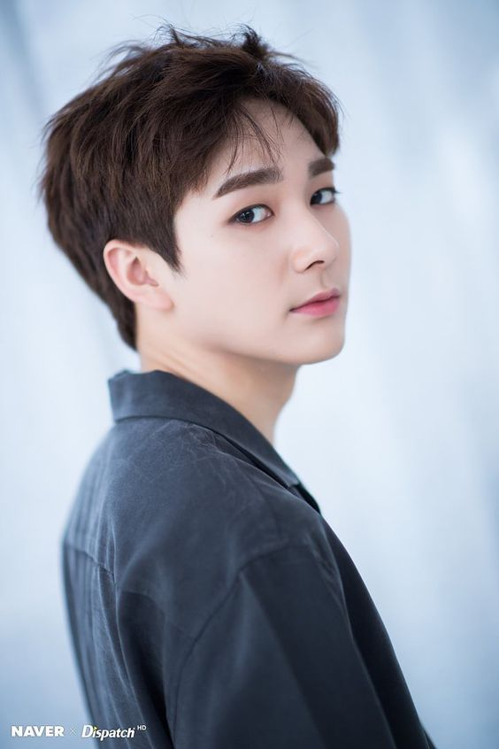
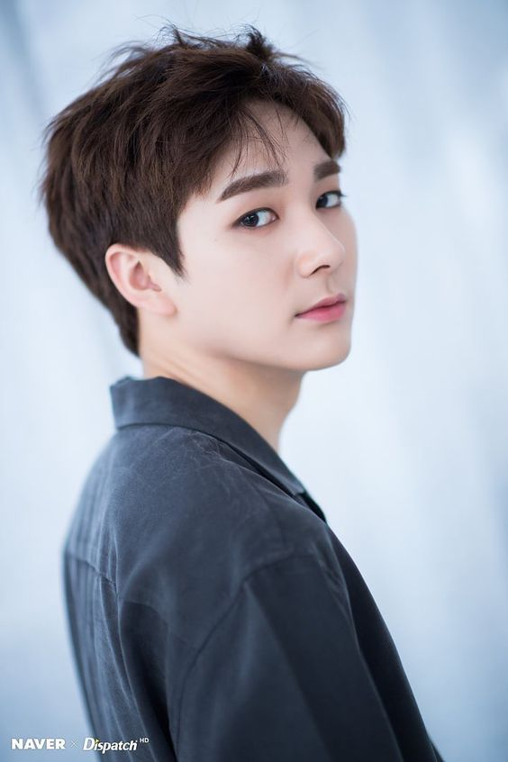

Choi Minki(REN)

Kim Jong-hyeon(JR)
Hwang Min-hyun(MINHYUN)
Kang Dong-ho(BAEKHO)
Kwak Aaron(ARON)
New Establish Style Tempo
Introduccion al Grupo
NU'EST (en hangul, 뉴이스트; acrónimo de New Establish Style Tempo, formados bajo el nombre de Pledis Boys). Fue una boyband surcoreana formada por Pledis Entertainment en 2012.El grupo estuvo conformado por cinco miembros, su fan club oficial es L.O.Λ.E (ㄴㅇㅅㅌ), este nombre deriva del hangul de su nombre. El debut del grupo fue un éxito con su sencillo FACE, un tema musical que hablaba sobre las problemáticas sociales (especialmente el Bullyng) con un sonido electro pop de una fuerte base similar al sonido original del girlgroup After School siendo conocidos como la versión masculina de este grupo, sin embargo NU'EST no siguió este ritmo, después de su primer minialbum Action, su sonido cambio drásticamente a un sonido suave y melancólico con una imagen más madura de los chicos; a partir de este momento el grupo fue experimentando con distintos estilos y sonidos a lo largo de su trayectoria aun así mantiene su propia esencia y se evidenciaba su proceso de crecimiento como un grupo sólido y único.
Choi Minki(REN)
Kim Jong-hyeon(JR)
Hwang Min-hyun(MINHYUN)
Kang Dong-ho(BAEKHO)
Kwak Aaron(ARON)
Se disolvió el 14 de marzo del 2022 al dar finalización de sus contratos con Pledis Entertainment, los miembros REN,JR y ARON decidieron no renovar sus contrato a comparación de MINHYUN y BAEKHO que si lo hicieron, actualmente cada miembro sigue su carrera en el mundo del espectáculo por separado.